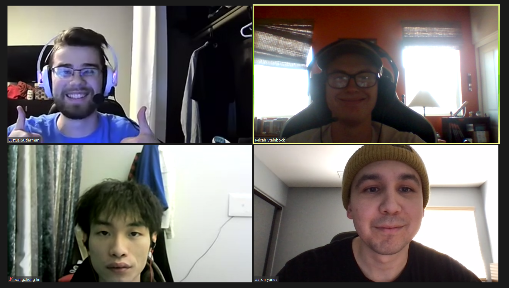

Senior Capstone: The Book of Jedidiah
Developed for EGR401 & EGR402: Senior Design & Presentation
Summary
The Book of Jedidiah was developed with the goal of being a wholesome, non-violent alternative to the popular violent video games that have become increasingly famous over the last two decades. The plot follows the hero Jedidiah who is fighting to free his brother from the clutches of the Seven Deadly Sins! Along his journey, he meets a monk named Ponti, who teaches Jed about resisting the sins power and fighting against his sin.
Packed full of fun Bible-themed side quests and challenges, this game offers an exciting single-player story based RPG experience where the player can explore a town and talk to NPCs, travel through a dangerous Wild Area and fight enemies, and collect unique items throughout their journey to save their brother.
The Team
This project was developed as part of a team. The team consisted of Wangzhen Lin, Justus Suderman, Aaron Yanes and myself.
My Portion of the Project
I worked on two main aspects of the game. The first was to create the NPCs. This included created pathfinding scripts, dialogue options, as well as various skins and other behavior options. Creating the dialogue required creating a custom node-based editor that allowed for dynamic paths of dialogue and various responses to script triggers.
The second part that I worked on was creating the questing system. This included creating the UI to view and interact with quests as well as the component to interface with the inventory to check if a quest's requirements are completed. Once the quest requirements are completed, the system also had to award the player with the reward items.